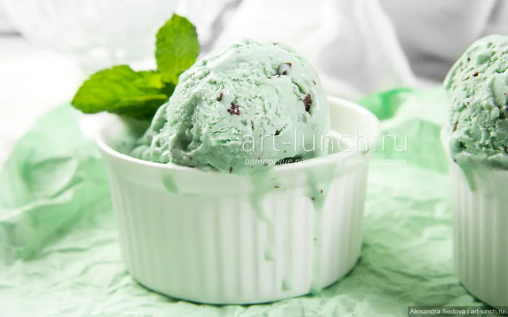

Моро́женое — пищевой продукт-десерт, представляющий собой замороженную в процессе непрерывного взбивания массу,
содержащую в основе своей питательные, вкусовые, ароматические и эмульгирующие вещества.
Вкусы
К мороженому нередко относят также фруктовый лёд, получаемый простым замораживанием фруктово-ягодных соков и пюре.

Mint chocolate ice cream
Разнообразие
Вы никогда не пробовали наше мороженое? Ох, мы приготовили много всего для вас.
The flavors in question
Моя жизнь
20 лет грусти и пива.
Продажа мороженого
Мороженое реализуется как в розничной торговле (магазины, киоски, лавки, лотки, специальные фургоны, автоматы мороженого),
так и на предприятиях общественного питания (рестораны, кафе, фастфуд, кафетерии). Существует производство мороженого как в домашних условиях, так и массовое промышленное, в том числе специализированными сетями (например, Baskin Robbins).
Что такое мороженое?
Что такое наше мороженое?
Всё началось много лет назад...
Мороженоепищевой продукт-десерт, представляющий собой замороженную в процессе непрерывного взбивания массу, содержащую в основе своей питательные, вкусовые, ароматические и эмульгирующие вещества.
Но у нас всё далеко не так просто!
ICQ - не абы какие мороженщики!
Наш магазин посещали звёзды русской эстрады с хорошей репутацией (и мы не про Филлипа Киркорова).
Кому нужно знать из чего делается наше мороженое, если в Тиктоке оно выглядит вкусно?
Чудесно, но зачем оно нужно?
ЧТОБЫ ОЩУТИТЬ ВКУС
Наш вкус - это все! Мы не меняли рецепт уже много десятилетий. Как тебе такое, Баскин Роббинс? 222